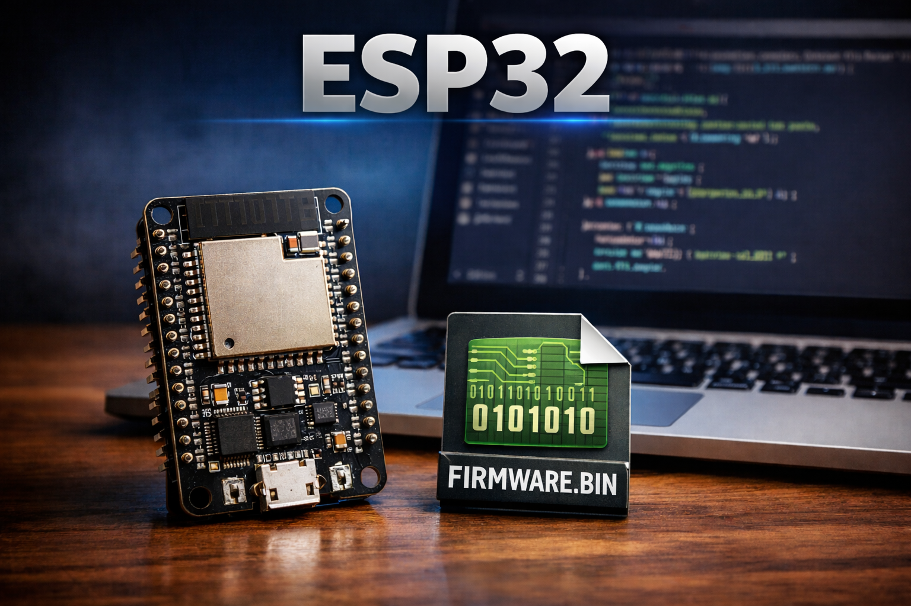
Instale o Microsoft VSCode e siga para a instalação da extensão ESP-IDF a partir do menu lateral "extensões". A extensão ESP-IDF contém todas as dependências para criar projetos para ESP32, inclusive o Python. Após a instalação da extensão, um wizard de instalação será aberto automaticamente, com opções de escolha para diferentes modos de instalação do ESP-IDF.
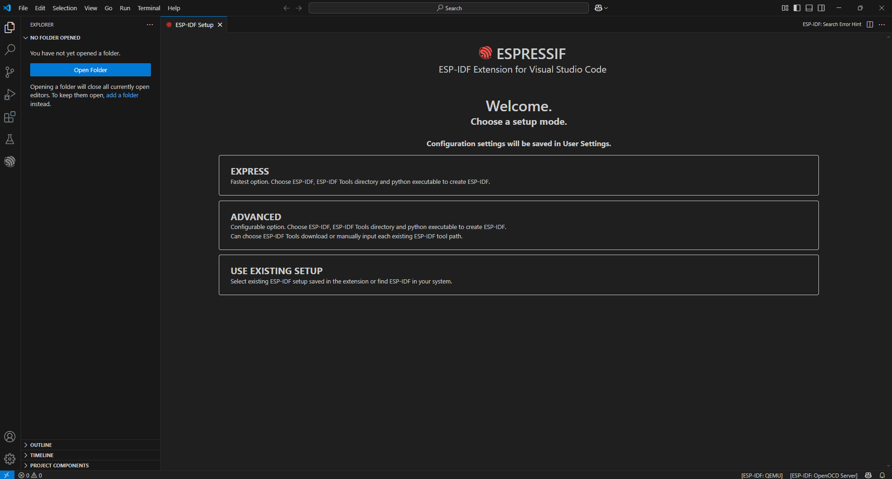
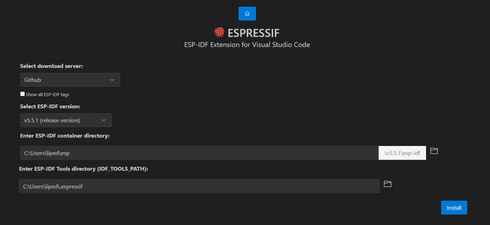
Para este guia, utilizaremos a opção "Expresso", que instala automaticamente todas as dependências. A próxima tela permite a seleção do servidor, versão e local de instalação, sendo ambos a critério do usuário. Para a criação do guia e dos respectivos códigos, foi utilizada a versão 5.5.1 do framework ESP-IDF.
Um adaptador USB‑UART é um pequeno chip ou cabo que permite que a porta USB de um computador se conecte aos pinos UART de um dispositivo. Embora ambos sejam “seriais”, o USB utiliza um protocolo complexo baseado em pacotes que os computadores entendem, enquanto o UART é apenas um fluxo bruto de bytes com bits de início/parada. O adaptador é necessário para traduzir entre esses dois formatos, permitindo que o PC se comunique diretamente com dispositivos seriais simples, como microcontroladores.
Ao conectar o dispositivo ESP32 por meio da interface USB, é necessário identificar se o dispositivo está sendo reconhecido no sistema como um dispositivo de comunicação serial. Acesse o gerenciador de tarefas do Windows e, caso não tenha um dispositivo reconhecido conforme imagem abaixo, instale o driver do dispositivo USB-UART específico.
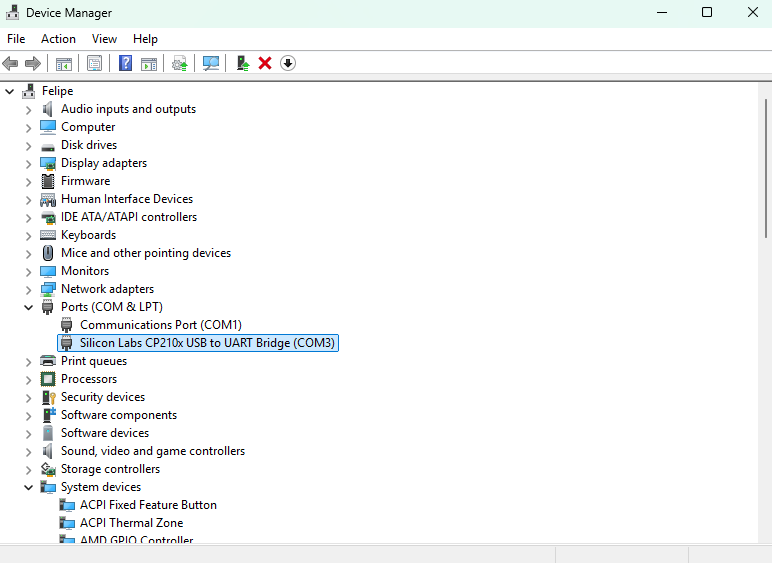
Identifique o fabricante do chip USB-UART (geralmente CH340 da WCH ou CP2102 da Silicon Labs.) e faça a instalação do driver do dispositivo em questão. Após isso, o dispositivo está preparado para se comunicar com o computador.
Crie um projeto novo ou utilize um template para dar início ao projeto. Com o projeto criado e aberto, é possível identificar a tela conforme imagem a seguir.
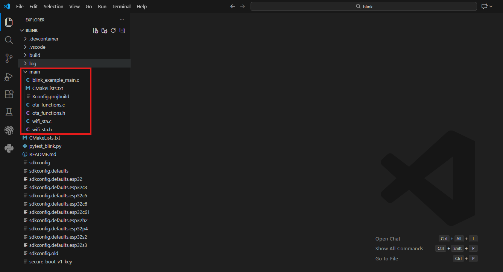
Os arquivos dentro da pasta "main" contém or arquivos fonte e de cabeçalho, sendo os únicos arquivos de manutenção necessários para o funcionamento do projeto. Existem outros arquivos importantes para otimizar o projeto, como configuração de defaults e limpeza de bibliotecas que não são o foco do tutorial, mas podem ser explorados para melhor entendimento.
As configurações do dispositivo ESP32 são realizadas através da imagem do campo "menuconfig" conforme imagem abaixo.
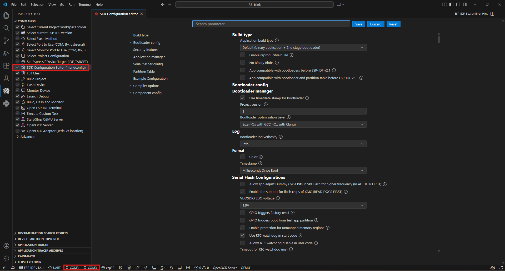
Um componente chave para a inicialização de um dispositivo digital que executa um firmware ou um sistema operacional é o bootloader. O bootloader é um pequeno bloco de software que viabiliza a inicialização de um sistema operacional ou firmware e permite a execução de atualizações. Além de preparar o ambiente de hardware para a execução do sistema, ele pode incluir mecanismos de segurança para garantir a integridade do processo, validar assinaturas digitais e oferecer suporte a atualizações remotas, como as realizadas via FOTA. Em sistemas embarcados, desempenha um papel fundamental na comunicação entre os componentes de hardware e software, assegurando uma transição eficiente entre o estado de inicialização e o funcionamento pleno do dispositivo
A imagem abaixo demonstra as 3 variações mais comuns de implementação de bootloader. Bootloader unificado ao firmware, bootloader fixo e separado na memória ROM e bootloader dividido em dois estágios na memória ROM e FLASH. A abordagem mais à direita apresenta maior flexibilidade e robustez e é a abordagem implementada no ESP32, conhecida como bootloader em duas etapas ou dois estágios. Dessa maneira, o bootloader de primeiro estágio é imutável e alocado na memória ROM, permitindo que o dispositivo sempre inicialize os recursos necessários para o funcionamento. Já o bootloader de segundo estágio, é alocado na memória flash e modificável, sendo responsável por recursos de implementação a critério do desenvolvedor. Recursos de segurança e até mesmo a funcionalidade de atualização OTA, são incluídas nesta porção de código.
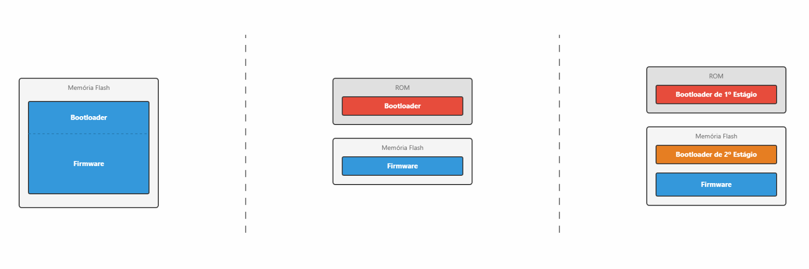
A memória flash do ESP32 pode ser organizada de acordo com a necessidade. Por padrão, a partir do endereço 0x8000, encontra-se a tabela de particões do dispositivo e as outras partições definidas pelo desenvolvedor/framework seguem conforme imagem a seguir. O bootloader fica localizado antes do endereço 0x8000 e, de acordo com a quantidade de recursos implementados, o tamanho desta porção de código aumenta. A seguir, a organização da memória flash para a implementação deste tutorial.
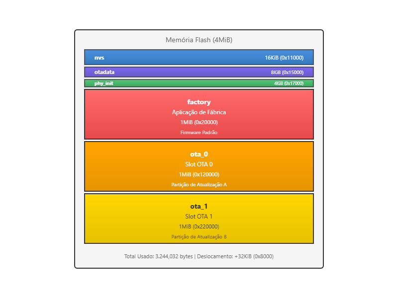
O projeto necessita de dois arquivos para realizar a atualização, sendo o firmware e um arquivo JSON para informar a versão e localização do binário.
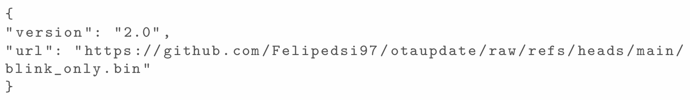
A atualização OTA consiste em modificar o firmware/bootloader do dispositivo remotamente, geralmente por uma conexão sem fio. Nesta Implementação, busca-se atualizar o ESP32 e garantir a requisitos mínimos de segurança sejam garantidos. A segurança no processo de atualização pode ser resumida nas seguintes etapas: empacotamento, transmissão, recepção/instalação e manutenção.
O empacotamento consiste no ato de gerar o binário do firmware, relacionado ao ambiente de criação e as práticas utilizadas na ato da criação do binário. Através do protocolo HTTPS na transmissão, é possivel garantir a segurança nesta etapa, que consiste no transporte do arquivo entre o hospedeiro e o dispositivo. Quando o dispositivo recebe o firmware, é necessário validar se o arquivo está íntegro e se é o arquivo que se espera. A manutenção consiste de práticas utilizadas para a mitigação de vulnerabilidades após a instalação.
A seguir, o fluxograma do processo de atualização OTA.
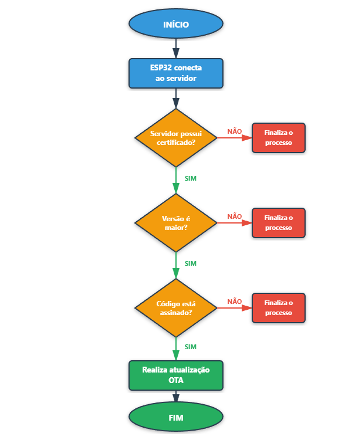
Através da implementação OTA proposta, é possível garantir a segurança nos processos de transmissão e recepção, assim como relacionar com a tríade de ciberssegurança, conforme imagem a seguir.
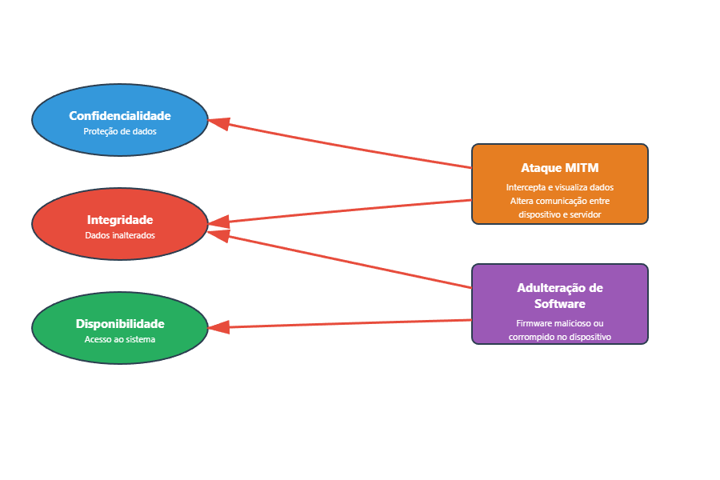
Práticas utilizadas como verificação de assinatura de código e verificação de integridade, são geralmente incluídas na funcionalidade chamada inicialização segura (secure boot).
Mesmo com as protecões de integridade, existe um mecanismo que faz uso das duas partições criadas anteriormente para evitar a parada do dispositivo em caso de falha no processo por outros motivos como, por exemplo, o desligamento do equipamento no momento de atualização. A funcionalidade de rollback de firmware funciona como um último caso de proteção, mas também pode ser utilizada a critério do desenvolvedor.
O rollback de aplicação no ESP32 é um mecanismo de segurança projetado para manter o dispositivo operacional após atualizações OTA, permitindo o retorno automático à versão anterior quando a nova aplicação apresenta problemas críticos. Este sistema funciona através de estados que o bootloader utiliza para determinar qual versão da aplicação deve ser carregada durante a inicialização. A flag responsável por habilitar o rollback de firmware é listada abaixo.
CONFIG_BOOTLOADER_APP_ROLLBACK_ENABLE Quando uma atualização OTA é instalada, a aplicação pode seguir três caminhos distintos: se funcionar corretamente, ela chama esp_ota_mark_app_valid_cancel_rollback() para marcar-se com estado ESP_OTA_IMG_VALID, confirmando sua estabilidade; se detectar erros críticos que impedem seu funcionamento, executa esp_ota_mark_app_invalid_rollback_and_reboot() para marcar-se como ESP_OTA_IMG_INVALID e reiniciar, forçando o bootloader a carregar a versão anterior; ou, caso a opção CONFIG_BOOTLOADER_APP_ROLLBACK_ENABLE esteja habilitada e ocorra um reset sem que nenhuma função de validação tenha sido chamada, o rollback acontece automaticamente como medida preventiva.
O fluxo recomendado envolve realizar diagnósticos na primeira inicialização após a atualização, validando explicitamente a aplicação em caso de sucesso ou acionando o rollback manualmente em caso de falha. Para situações onde a aplicação não consegue nem executar devido a travamentos, abortos ou perdas de energia, o próprio bootloader detecta a anomalia na próxima tentativa de boot e realiza o rollback automaticamente, marcando a versão problemática como inválida e restaurando a aplicação anterior que estava funcionando, garantindo assim a recuperação do dispositivo sem intervenção manual Espressif.
Para a crição do projeto de atualização OTA, foi utilizado o FreeRTOS, já contido no ESP-IDF. Através das estruturas de tasks, event groups e run stats, a implementação fica mais organizada e permite a preempção de tarefas e a troca de contexto simples e eficaz. O overhead de um OS não será tratado neste projeto, mas deve ser levado em conta para diferentes casos.
As funções dos arquivos do projeto são explicadas brevemente a seguir.
Para seguir com a implementação, é necessário utilizar os arquivos fornecidos e substituí-los dentro da pasta main informada anteriormente. Os trechos de código referente as credenciais de Wi-Fi e localização/versão do arquivo JSON devem ser alterados conforme necessidade. Lembrando que o firmware hospedado precisa ter o valor do campo "VERSION_CURRENT" maior que o valor utilizado no firmware contido no dispositivo.
As flags de sistema alteradas pelo menuconfig, são explicadas a seguir e devem ser alteradas conforme orientado.
A última etapa envolve a criação de um certificado para assinar o firmware e ser utilizado pelo bootloader para verificação. O ESP-IDF fornece um módulo e comando para a geração deste arquivo. Basta abrir o terminal do ESP-IDF e digitar "idf.py secure-generate-signing-key secure_boot_v1_key". O arquivo será gerado no diretório ao qual o terminal se encontra no momento do comando. Certifique-se de deixar o arquivo na raíz do projeto e utilize o mesmo nome utilizado no campo "Secure boot private signing key", comentado anteriormente.
Com os arquivos fonte e de cabeçalho substituídos, certificado gerado e configurações alteradas, basta gravar os firmwares para efetuar o teste. Basta compilar as duas versões, gravar no dispositivo a versão atual e hospedar o binário da versão incrementada com o .json. O .bin da do firmware fica localizado dentro da basta build, com o mesmo nome do projeto.
Se tudo ocorreu conforme o esperado, espera-se que o dispositivo reinicie e execute o firmware recebido.
Na implementação OTA deste guia, foi configurado e implementado um bootloader de dois estágios no ESP32 para efetuar atualizações OTA. As particões foram organizadas de modo a garantir que existam dois slots na flash para o firmware recebido, garantindo o processo de rollback em caso de falha no processo de atualização. O firmware é transmitido ao dispositivo por meio da pilha TCP/IP, especificamente utilizando HTTPS na camada de aplicação e Wi-Fi na camada de enlace/física. Os mecanismos de verificação de assinatura de código foram implementados em uma abordagem para um cenário de desenvolvimento, com a chave pública da criptografia simétrica armazenada juntamente ao bootloader na flash. Em um cenário de produção, o ESP32 fornece mecanismos que podem ser gravados uma única vez e previnem adulteração da chave, recurso chamado eFuses. Além disso, a criptografia de flash pode auxiliar com protecões contra engenharia reversa.
No geral, a implementação fornecida apresenta controle de versão por meio do arquivo JSON, segurança na transmissão e recepção, assim como robutez a falhas no processo, o que caracteriza um parâmetro mínimo para implementações FOTA.
Diferentes infraestruturas/protocolos podem ser exploradas, levando em consideração throughput, segurança e latência. LoRa/LoRaWAN e MQTT são exemplos.
Endereço com arquivos do projeto.